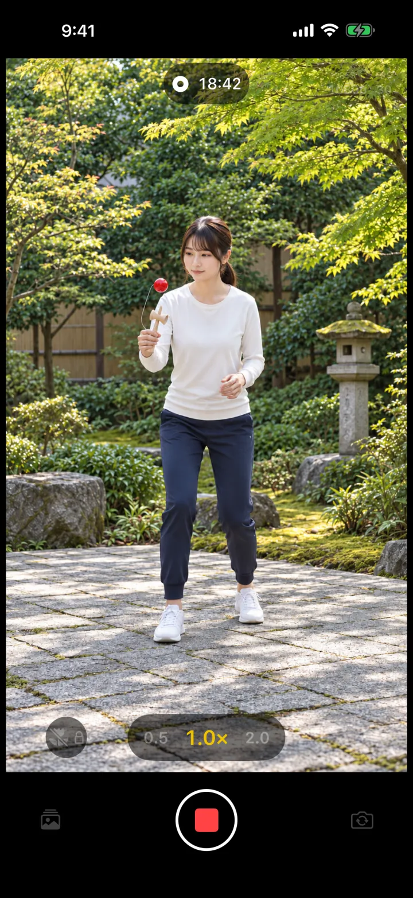
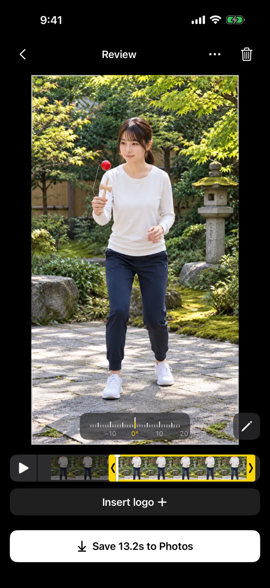
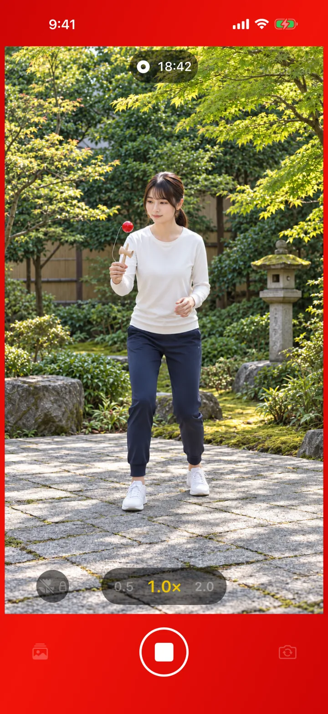
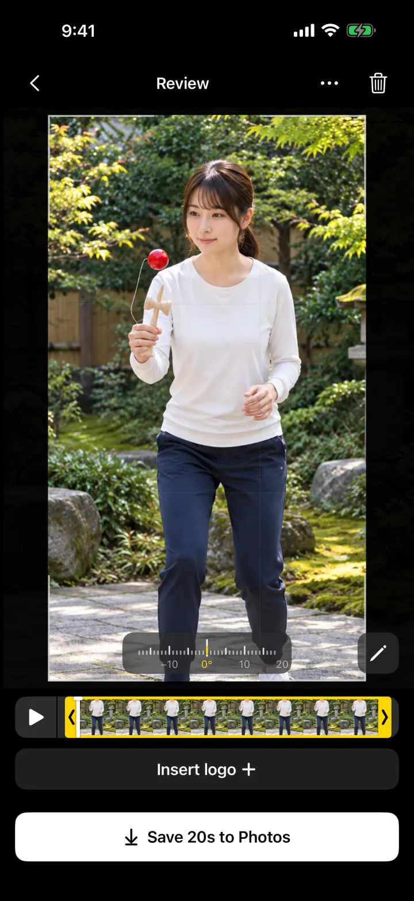
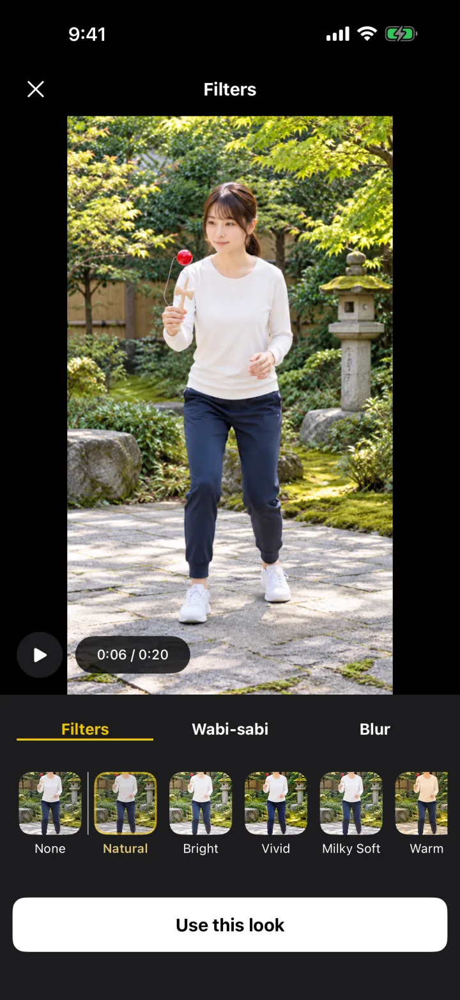
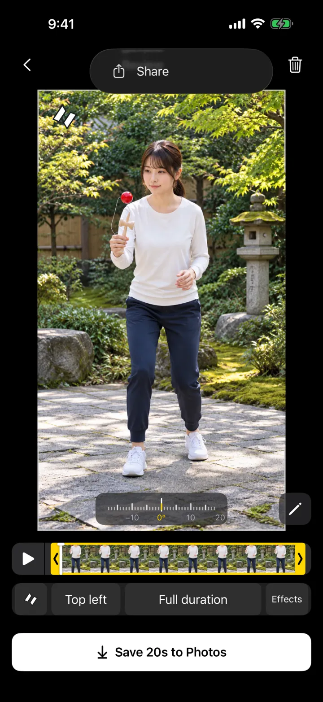
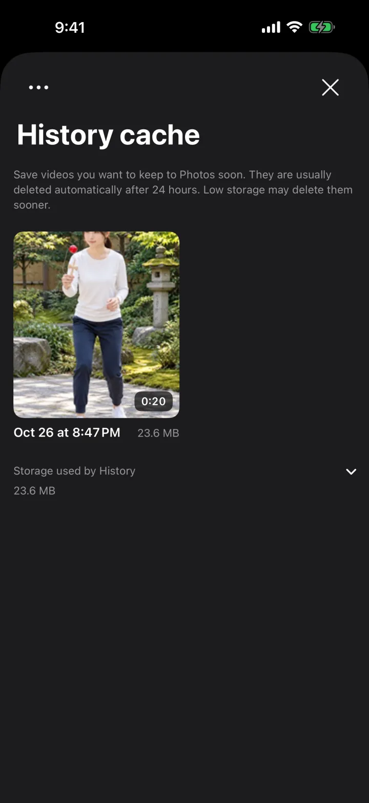
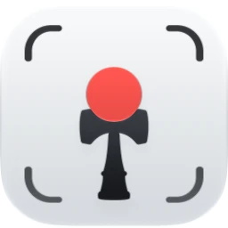

Keep the moments you land.
DamaReco is a camera app for kendama practice. Keep recording while you practice, stop once you land the trick, and save just that moment to Photos.




HOW IT WORKS
Only the last 3 minutes stay on hand.
Footage older than the last 3 minutes is cleared as you record, so storage use doesn’t keep growing, even on long takes. Stop when it lands, then choose the start. Only that moment goes to Photos.
-
Set it up and record
Put your iPhone on a tripod or stand and tap Record. Then just focus on your practice.
-
Stop when it lands
Stop once you land the trick. Up to the last 3 minutes are waiting on the review screen.
-
Pick the moment and save
Drag the ends of the yellow frame to choose the start and end, then save to Photos.
WHILE RECORDING
Focus on the trick.
Wonder if it’s still recording when you step away? Red bands glow around the screen while recording, so you can tell at a glance.
You can turn the red bands off in Settings.

AFTER RECORDING
Minimal, from filming to posting.
-

Adjust framing easily, right on the spot
Frame what you want to show, just right. After recording, shift the view or zoom in to tidy up your composition, and straighten the tilt in 1° steps.
-

Get the look you like with filters
Choose your video’s color tone to set the mood you want, and add an effect such as cherry blossoms or snow. Check it as you go in the preview.
-

Add your logo and share
Add your logo and share right after recording. No need to open an editor every time you post.
CLEANUP
Tidy storage.
Deleting unwanted videos takes time. Videos you don’t save to Photos normally clear from the app after 24 hours.
- Copies saved to Photos stay in Photos
- Until a clip clears, reopen it from history and save a different moment
- When storage is low, older clips clear sooner

AND MORE
A proper camera for filming kendama.
- 4K at 60 fpsRecord in 4K at 60 fps on supported cameras.
- Slow motionAfter saving, adjust which part plays in slow motion in the Photos app.
- Front or rear, portrait or landscapeUse either camera and record in portrait or landscape.
- Storage estimateSee the estimated space each capture setting needs, alongside your free space.
- Retry savingIf a save fails, retry with the same settings.
- Five languagesEnglish, Japanese, Simplified and Traditional Chinese, and Romanian.
FAQ
Good to know
Is it free?
Yes. There are no ads and no account to create.
Can I get back footage from before the last 3 minutes?
No. While recording, footage older than the last 3 minutes is cleared as you go (in slow motion, you can go back even less). Stop soon after you land the moment you want.
How long do videos stay in the app?
Videos you don’t save to Photos are normally removed from the app automatically after about 24 hours, and may go sooner when storage is low. Videos saved to Photos aren’t affected, so save the ones you want to keep.
Do saved videos include a DamaReco mark?
Yes. Saved and shared videos include a small DamaReco mark and end with a short ending of about 1.5 seconds.
What if I lock the screen or switch apps while recording?
Recording continues only while DamaReco is open. A call, locking the screen or switching apps will stop it. DamaReco keeps the screen from auto-locking while recording. Long sessions use more battery and can make your iPhone warm.
Are my videos sent anywhere?
DamaReco never sends your videos or audio to the developer or Google. Your footage is processed on your iPhone and goes only where you choose to share it. To improve the app, usage and crash information is collected with Firebase. See the Privacy Policy for details.
Which devices are supported?
iPhone with iOS 18 or later. Camera and microphone access are required, and allow adding to Photos when you save. Available features vary by model.

The camera that lets you keep just the tricks you land.